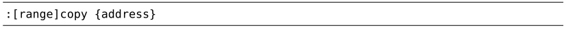

）：
）：技巧29使用‘:t’和‘:m’命令复制和移动行
:copy命令（及其简写形式:t）让我们可以把一行或多行从文档的一部分复制到另一部分，而:move命令则可以让我们把一行或多行移到文档的其他地方。
我们将使用如下购物清单作为演示：
用‘:t’命令复制行
这个购物清单还没完成，我们也要在五金商店（hardware store）买些钉子（nails）。为完成这个清单，我们将重用文件的最后一行，即在“Hardware Store”下面为之创建一份副本。我们可以用 Ex 命令:copy轻松地完成这项工作：
copy命令的格式如下（参见:h :copy）：

在此例中，[range]是第6行，而{address}用的是符号.，它代表当前行。因此，我们可以把:6copy.命令解读为“为第6行创建一份副本，并放到当前行下方”。
:copy命令可以简写为两个字母:co，或者也可以用更加简练的 :t命令，它是:copy命令的同义词。
为了更好地记忆，你可以把该命令想成“复制到（copy TO）”。下表展示了:t命令的一些应用实例：
:t.命令会创建一个当前行副本，而另外一种做法则是用普通模式的复制和粘贴命令（yyp）来达到同样的效果。这两种复制当前行的技术有个需要关注的差别：yyp会使用寄存器，而:t.则不会。因此，当我不想覆盖默认寄存器中的当前内容时，有时我会使用:t.来复制行。
在上表中，也可以将yyp变化一下来复制我们想要的行，但不管怎样，这都需要一些额外的移动动作。我们得先跳到想复制的行上（6G），复制该行（yy），快速跳回原先的位置（<C-o>），然后再用粘贴命令（p）创建一个副本。由此可见，在复制距离较远的行时，:t命令通常更加高效。
在Ex命令影响范围广且距离远中，我们已经了解了这个一般规律，即普通模式命令适合在本地进行操作，而Ex命令则可以远距离操作。本节则以实例印证了这一规律。
用‘:m’命令移动行
:move命令看上去和:copy命令很相似（参见:h :move）：
我们可以把它简写为一个字母:m。假设我们想把Hardware Store一节移到Beauty Parlor一节的下方，用:move就可以实现这一点，如表5-2所示。
在选中高亮选区后，只需简单地执行命令:'<,'>m$ 即可。另外还有种做法，我们也可以执行dGp，此命令可以分解为：d删除高亮选区，G跳转到文件结尾，而p则粘贴刚刚删除的文本。
表5-2用‘:m’命令对一组进行移动
记住，'<,'>代表了高亮选区。因此我们可以很容易地选中另外一个高亮选区，然后重复执行:'<,'>m$命令把选中的文本移到文件结尾。重复上次的 Ex 命令非常简单，只需按@: 即可（技巧31给出了另一个例子），所以这里所采取的方式与使用普通模式命令相比，在重复执行时会更方便。